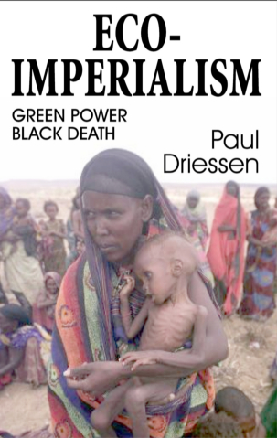

Center
for the Defense of Free Enterprise
Center
for the Defense of Free Enterprise
Paul Driessen
HOME ISSUES OPPOSITION PROJECTS DEFENDERS WISE USE BOOKSTORE ARCHIVE
|
Paul Driessen |
|
HOME ISSUES OPPOSITION PROJECTS DEFENDERS WISE USE BOOKSTORE ARCHIVE |
|

|
Excerpt from Eco-Imperialism: Green
Power Black Death
Introduction
by Niger Innis

This book should have been written years ago.
It reveals a dark secret of the ideological environmental movement. The movement imposes the views of mostly wealthy, comfortable Americans and Europeans on mostly poor, desperate Africans, Asians and Latin Americans. It violates these peoples most basic human rights, denying them economic opportunities, the chance for better lives, the right to rid their countries of diseases that were vanquished long ago in Europe and the United States.
Worst of all, in league with the European Union, United Nations and other bureaucrats, the movement stifles vigorous, responsible debate over energy, pesticides, biotechnology and trade. It prevents needy nations from using the very technologies that developed countries employed to become rich, comfortable and free of disease. And as a consequence, it sends millions of infants, children, men and women to early graves every year.
The ideological environmental movement is a powerful $4-billion-a-year US industry, an $8-billion-a-year international gorilla. Many of its members are intensely eco-centric, and place much higher value on wildlife and ecological values than on human progress or even human life.
They have a deep fear and loathing of big business, technology, chemicals, plastics, fossil fuels and biotechnology and they insist that the rest of world should acknowledge and live according to their fears and ideologies. They are masters at using junk science, scare tactics, intimidation, and bogus economic and health claims to gain even greater power
As this book forcefully points out, these radical activists have now wrapped their ideologies up in several elastic principles that focus on perceived environmental threats and largely ignore human needs: corporate social responsibility, sustainable development, the precautionary principle and socially responsible investing. What makes Eco-Imperialism unique, though, is not just its insightful analysis of corporate and environmental "ethics," but its reliance on personal, sometimes angry observations by people from less developed countries, who bear the brunt of these misguided environmental policies.
The ideological environmentalists are helped every step of the way by people who ought to know better, and ought to be the first to challenge their assumptions, claims and demands: corporate executives, US civil rights leaders, politicians, journalists and even clergy. They should be paying intense attention to the issues raised in this book. Instead, they typically ignore them, preferring to focus on Republican misdeeds, perceived slights and other contrived problems. By their silence, they accept and encourage the human rights violations, and the brutalizing of entire nations and continents.
During the recent World Trade Organization meeting in Cancun, Mexico, the Congress of Racial Equality confronted a number of extremist environmental groups with these facts. We discovered that they were very uncomfortable with having to defend the indefensible as well they should be. CORE concluded that the time has come to hold these radicals to civilized standards of behavior, end the tolerance for their lethal policies, and demand that they be held accountable for their excesses and the poverty, disease and death they have perpetrated on the poor and powerless. Eco-Imperialism begins to do exactly that.
Driessen does a masterful job of stripping away the radicals mantle of virtue, dissecting their bogus claims and holding them to the moral and ethical standards they have long demanded for everyone except themselves. And he does so with humor, outrage and passion and always without pulling any punches. Every concerned citizen and policy maker should read this book. The environmentalists will hate it. The worlds destitute masses will love it. And everyone will be challenged by it to reexamine their beliefs and the environmental establishments claims.
Niger Innis
Congress of Racial Equality
New York City
CSPAN2 Broadcast of Driessen at University of Wisconsin, Madison
RETURN TO CENTER FOR THE DEFENSE OF FREE ENTERPRISE HOME PAGE
{kind=link}